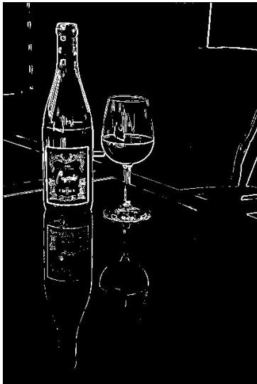
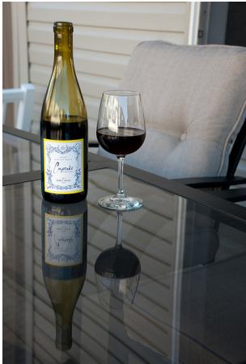
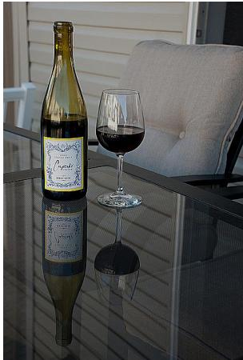
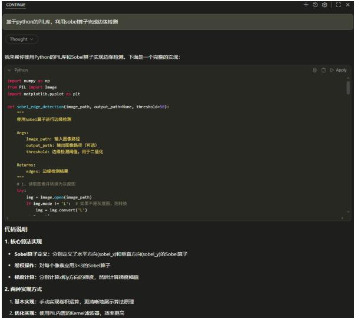

第三部分 锐化与边缘检测¶
第三部分：锐化与边缘检测¶
核心问题¶
平滑滤波可以减弱噪声，但也可能让边缘变得模糊。如果我们希望突出物体轮廓、纹理细节和结构变化，就需要进行锐化与边缘检测。
原始图像 → 锐化处理 → 边缘和细节更明显
锐化¶
- 增强图像细节
- 使边缘更加清楚
- 改善视觉清晰度
边缘检测¶
- 找出灰度变化明显的位置
- 提取目标轮廓
- 为分割、识别做准备
一句话¶
边缘通常对应图像中灰度变化剧烈的地方。
什么是边缘？¶
直观理解¶
在图像中，如果相邻区域的灰度或颜色发生明显变化，我们通常认为那里存在边缘。
- 物体与背景的交界处；
- 明暗变化明显的位置；
- 纹理方向发生变化的位置；
- 不同材料、不同结构的边界。
数学理解¶
边缘可以看作图像函数变化最快的位置。
边缘 \(\Longleftrightarrow\) 灰度变化大
一阶导数：用梯度描述边缘¶
基本思想¶
如果把图像看作二维函数 \(f(x, y)\) ，那么灰度变化可以用偏导数描述：
梯度向量为:
梯度幅值为:
- 梯度越大，说明灰度变化越剧烈；
- 灰度变化剧烈的位置，往往就是边缘；
- 边缘检测可以理解为寻找梯度较大的位置。
离散图像中的梯度近似¶
问题¶
数字图像不是连续函数，而是像素矩阵。因此，导数需要用差分来近似。
水平方向差分¶
竖直方向差分¶
理解¶
- 如果相邻像素差别很小，说明局部比较平滑；
- 如果相邻像素差别很大，说明可能存在边缘；
- 差分越大，边缘响应越强。
Sobel 算子：常用的边缘检测方法¶
基本思想¶
Sobel 算子用两个卷积模板分别估计水平方向和竖直方向的灰度变化。
特点¶
- 能突出边缘位置；
- 对噪声比简单差分更稳健；
- 是最经典的边缘检测方法之一。
边缘检测例子¶

锐化：让细节更突出¶
基本思想¶
锐化的目标是增强图像中的高频成分，例如边缘、纹理和细节。
锐化图像 = 原图像 + 细节增强项
一种常见形式是：
其中：
- \(f\) : 原始图像；- \(f_{\mathrm{smooth}}\) ：平滑后的图像；
- \(f - f_{\mathrm{smooth}}\) ：图像中的细节部分；
- \(\alpha\) ：锐化强度。
直观理解¶
先找出图像中 “被平滑掉的细节”，再把这些细节加回去。
拉普拉斯算子：二阶导数锐化¶
基本思想¶
拉普拉斯算子利用二阶导数检测灰度变化，常用于图像锐化。
常见离散模板：
锐化形式
注意
锐化可以增强边缘，但也可能同时放大噪声。
锐化例子¶


锐化与平滑的关系¶
看似相反，其实互补¶
平滑滤波¶
- 减弱噪声
- 抑制高频成分
- 图像更柔和
- 可能模糊边缘
锐化处理¶
- 增强细节
- 突出高频成分
- 边缘更清楚
- 可能放大噪声
工程经验¶
实际处理中，常常需要先适当去噪，再进行边缘检测或锐化。
去噪 → 锐化 → 边缘检测
边缘检测有什么用？¶
边缘是图像理解的重要线索¶
- 在医学图像中，帮助观察器官、病灶和组织边界；
- 在遥感图像中，帮助提取道路、河流、建筑轮廓；
- 在工业检测中，帮助发现裂纹、划痕和缺陷；
- 在自动驾驶中，帮助识别车道线、车辆和行人轮廓；
- 在文档图像中，帮助提取文字边界和版面结构。
一句话¶
边缘检测不是最终目的，而是许多图像分析任务的基础步骤。
Vibe Coding¶
vs code + continue + ollama (本地模型)/API (deepseek 等)

第三部分阶段小结¶
① 边缘通常对应图像中灰度变化剧烈的位置。 ② 梯度可以描述图像的一阶变化。 ③ 梯度幅值越大，边缘响应通常越强。 4 数字图像中的导数通常用差分近似。 ⑤ Sobel 算子是经典的一阶边缘检测方法。 ⑥ 锐化可以增强图像细节，但也可能放大噪声。 7 平滑与锐化并不是完全对立，而是需要配合使用。
下一步¶
有了边缘之后，我们还希望进一步把图像中的目标区域分离出来。这就进入下一部分：图像分割。